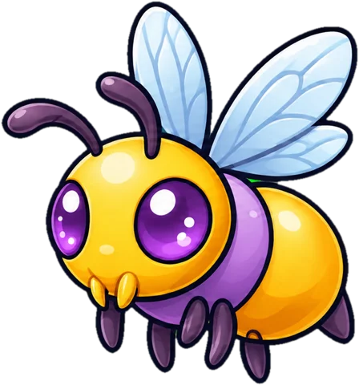

 Psychic
PsychicTap a stage to read its story.
Buzzite is a soft round bee with large violet eyes and small, pale translucent wings that flutter in a constant trembling hover. Its fuzzy yellow-and-black body is patterned neatly, and it holds its two tiny forelegs together as though always about to ask a polite question. It drifts through Bug Thicket in small clusters, leaving faint trails of psychic pollen that makes other creatures feel briefly remembered - like they have just heard their own name called from far away.
Field note: Buzzite pollen causes a warm sense of recognition in anything it touches - experienced trainers describe it as feeling suddenly homesick for a place they love.
Bug Thicket. Buzzite and its family are found in the Bug Thicket. See everyone who lives there.
Share a Bond Food that matches its types to become friends. Buzzite loves:
A Bond Food is not a trick. It joins your spirit with the Kimuro's spirit, and only when it chooses you.
Print the Kimuro adventure packs: mazes, cards, a board game and Bond Mark medals.
See the printable packs